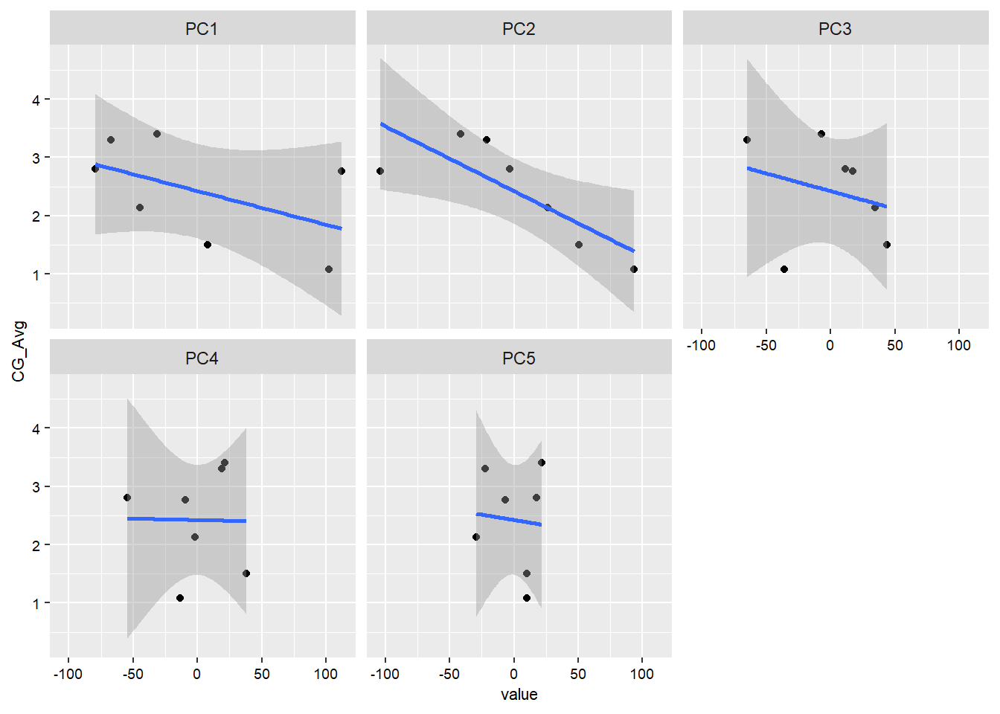
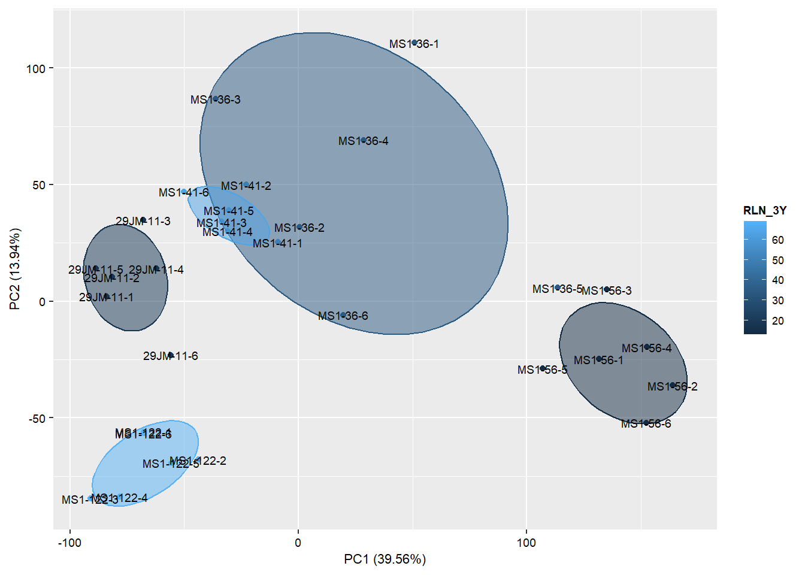
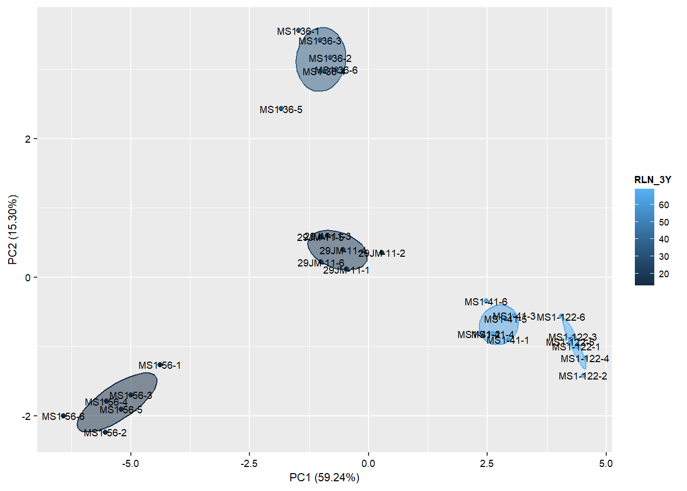
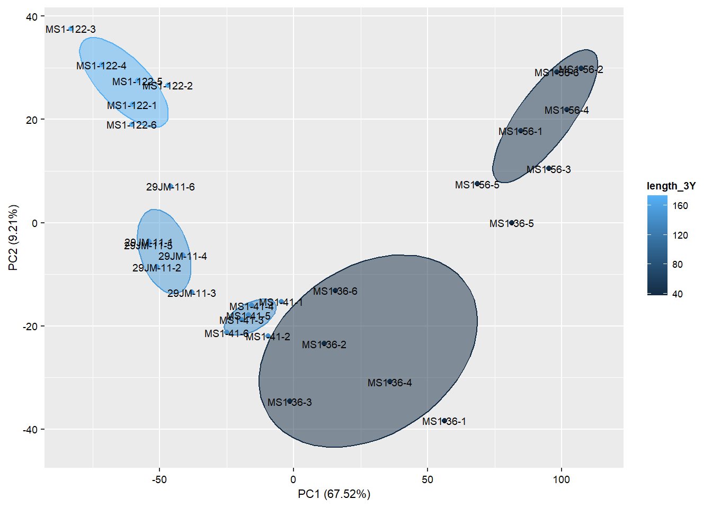

pacman::p_load(base,
edgeR,
tidytable,
data.table,
dplyr,
stats,
ggpubr,
tidyr,
ggplot2,
gridExtra,
limma,
OmicsAnalyst,
sjPlot,
tibble,
tidytext,
utils,
statmod,
corrplot)SCRI_ROOT_RNAs
Load neccessary libraries
Read in and prepare expression data
dat = fread("C:/Users/hsaxe/OneDrive/Documents/ALAB/Transcriptome_data/Root/SCRI_ROOT_RNAseq_counts_combined_genomes.txt")
dat$GeneID = gsub("LOC", "", dat$GeneID)
# dat = dat %>%
# select(!matches('STJM'))
head(dat) GeneID 29JM-11-1 29JM-11-2 29JM-11-3 29JM-11-4 29JM-11-5 29JM-11-6
1: 121242473 6 5 8 10 16 20
2: 121268866 0 0 0 0 0 0
3: 121241406 210 70 274 445 564 409
4: 121250192 38 12 40 111 109 76
5: 121241144 8 6 17 13 33 13
6: 121255391 76 28 146 196 206 102
JMS-12-1 JMS-12-2 JMS-12-3 JMS-12-4 JMS-12-5 JMS-12-6 MS1-122-1 MS1-122-2
1: 11 6 11 14 16 15 23 29
2: 0 0 0 0 0 0 0 0
3: 373 410 415 261 439 609 622 674
4: 88 81 106 79 92 108 80 123
5: 11 4 5 7 9 16 13 17
6: 23 102 110 106 85 275 181 181
MS1-122-3 MS1-122-4 MS1-122-5 MS1-122-6 MS1-36-1 MS1-36-2 MS1-36-3 MS1-36-4
1: 50 26 54 23 13 11 15 13
2: 0 0 0 0 0 0 0 0
3: 618 233 986 368 787 342 1020 531
4: 91 52 176 70 153 91 228 148
5: 20 13 32 11 3 15 20 3
6: 253 69 259 162 331 76 386 180
MS1-36-5 MS1-36-6 MS1-41-1 MS1-41-2 MS1-41-3 MS1-41-4 MS1-41-5 MS1-41-6
1: 12 33 9 14 9 7 17 7
2: 0 0 0 0 0 0 0 0
3: 491 714 535 231 454 355 618 331
4: 129 173 101 54 82 73 107 75
5: 1 17 10 2 7 9 2 6
6: 14 126 115 88 181 122 235 162
MS1-56-1 MS1-56-2 MS1-56-3 MS1-56-4 MS1-56-5 MS1-56-6 STJM-4-1 STJM-4-2
1: 35 21 25 10 0 30 0 6
2: 0 0 0 0 0 0 0 0
3: 1122 1017 846 828 155 1116 18 50
4: 196 242 156 152 46 247 17 33
5: 1 1 1 2 1 0 0 0
6: 43 20 77 26 11 15 0 0
STJM-4-3 STJM-4-4 STJM-4-5 STJM-4-6
1: 3 9 3 4
2: 0 0 0 0
3: 52 184 83 69
4: 19 58 18 23
5: 1 6 0 0
6: 5 7 2 3Read in metadata
metadata = fread("SCRI_Phenotype_Analysis/2023_metadata.csv", stringsAsFactors = T) %>%
mutate(CAL_Wip_ID = gsub(' ', '-', CAL_Wip_ID) %>%
gsub('M4', 'M-4', .)) %>%
select(!matches('>'))
head(metadata) CAL_Wip_ID genotype Female_Parent length_2Y RLN_2Y length_3Y RLN_3Y
1: 29JM-11 29JM11 29.11 96.30 68.90 152.80 17.9
2: JMS-12 JMS 12 29.11 63.40 26.70 NA NA
3: MS1-36 MS1 36 31.01 24.33 1.29 37.50 34.1
4: MS1-41 MS1 41 31.01 117.50 247.80 139.56 63.9
5: MS1-56 MS1 56 31.01 44.33 16.40 44.94 13.0
6: MS1-122 MS1 122 31.01 149.33 3.70 173.00 68.9
Over_length_3Y Over_RLN_3Y CG_Avg PHY_Avg
1: NA NA 2.800000 32.70450
2: NA NA 3.400000 26.29900
3: NA NA 1.500000 15.97925
4: NA NA 2.133333 35.02627
5: NA NA 1.075000 19.50000
6: 100.56 26.7 3.300000 39.70000Modify metadata for this analysis
metadata = data.frame(Sample = colnames(dat)[colnames(dat) != 'GeneID']) %>%
mutate(Hybrid = as.factor(gsub("\\-\\d$", "", Sample))) %>%
left_join(metadata, by = c('Hybrid' = 'CAL_Wip_ID')) %>%
rename_with(~ gsub('2Y-length', 'Length_2Y', .x) %>%
gsub('3Y-length', 'Length_3Y', .) %>%
gsub('2Y-RLN', 'RLN_2Y', .) %>%
gsub('3Y-RLN', 'RLN_3Y', .)) %>%
mutate(RLN_2_3Y = rowMeans(select(., matches('RLN'))))
# mutate(RLN_2Y = log10(RLN_2Y + 1))
row.names(metadata) = metadata$Sample
fwrite(metadata, 'Plotting/metadata.csv')
head(metadata) Sample Hybrid genotype Female_Parent length_2Y RLN_2Y length_3Y
29JM-11-1 29JM-11-1 29JM-11 29JM11 29.11 96.3 68.9 152.8
29JM-11-2 29JM-11-2 29JM-11 29JM11 29.11 96.3 68.9 152.8
29JM-11-3 29JM-11-3 29JM-11 29JM11 29.11 96.3 68.9 152.8
29JM-11-4 29JM-11-4 29JM-11 29JM11 29.11 96.3 68.9 152.8
29JM-11-5 29JM-11-5 29JM-11 29JM11 29.11 96.3 68.9 152.8
29JM-11-6 29JM-11-6 29JM-11 29JM11 29.11 96.3 68.9 152.8
RLN_3Y Over_length_3Y Over_RLN_3Y CG_Avg PHY_Avg RLN_2_3Y
29JM-11-1 17.9 NA NA 2.8 32.7045 NA
29JM-11-2 17.9 NA NA 2.8 32.7045 NA
29JM-11-3 17.9 NA NA 2.8 32.7045 NA
29JM-11-4 17.9 NA NA 2.8 32.7045 NA
29JM-11-5 17.9 NA NA 2.8 32.7045 NA
29JM-11-6 17.9 NA NA 2.8 32.7045 NAPlotting metadata
metaLong = metadata %>%
select(!Sample) %>%
select(Hybrid,
CG_Avg,
PHY_Avg,
RLN_2Y,
RLN_3Y,
length_3Y) %>%
distinct() %>%
pivot_longer(where(is.numeric),
names_to = 'Trait')
p = ggplot(metaLong,
aes(reorder_within(Hybrid, value, Trait),
value,
fill = Hybrid))+
geom_col()+
scale_x_reordered()+
theme(axis.text.x = element_text(angle = 30))+
facet_wrap(~Trait, scales = 'free', ncol = 2)
pWarning: Removed 4 rows containing missing values (`position_stack()`).save_plot('DGEresults/metadata_plot.png', p, height = 10, width = 20)Warning: Removed 4 rows containing missing values (`position_stack()`).png
2 Center and scale predictors to make comparisons more interpretable in results
metadata_S = metadata %>%
mutate_if(is.numeric, scale)
head(metadata_S) Sample Hybrid genotype Female_Parent length_2Y RLN_2Y
29JM-11-1 29JM-11-1 29JM-11 29JM11 -1.140871 0.3700379 0.1440493
29JM-11-2 29JM-11-2 29JM-11 29JM11 -1.140871 0.3700379 0.1440493
29JM-11-3 29JM-11-3 29JM-11 29JM11 -1.140871 0.3700379 0.1440493
29JM-11-4 29JM-11-4 29JM-11 29JM11 -1.140871 0.3700379 0.1440493
29JM-11-5 29JM-11-5 29JM-11 29JM11 -1.140871 0.3700379 0.1440493
29JM-11-6 29JM-11-6 29JM-11 29JM11 -1.140871 0.3700379 0.1440493
length_3Y RLN_3Y Over_length_3Y Over_RLN_3Y CG_Avg PHY_Avg
29JM-11-1 0.7477421 -0.9237004 NA NA 0.4502366 0.5030946
29JM-11-2 0.7477421 -0.9237004 NA NA 0.4502366 0.5030946
29JM-11-3 0.7477421 -0.9237004 NA NA 0.4502366 0.5030946
29JM-11-4 0.7477421 -0.9237004 NA NA 0.4502366 0.5030946
29JM-11-5 0.7477421 -0.9237004 NA NA 0.4502366 0.5030946
29JM-11-6 0.7477421 -0.9237004 NA NA 0.4502366 0.5030946
RLN_2_3Y
29JM-11-1 NA
29JM-11-2 NA
29JM-11-3 NA
29JM-11-4 NA
29JM-11-5 NA
29JM-11-6 NAPlotting metadata
metaLongS = metadata_S %>%
select(!Sample) %>%
select(Hybrid, CG_Avg, PHY_Avg, RLN_2Y, RLN_3Y) %>%
distinct() %>%
pivot_longer(where(is.numeric), names_to = 'Trait')
p =ggplot(metaLongS, aes(reorder_within(Hybrid, value, Trait), value, fill = Hybrid))+
geom_col()+
scale_x_reordered()+
theme(axis.text.x = element_text(angle = 30))+
facet_wrap(~Trait, scales = 'free', ncol = 2)
pWarning: Removed 2 rows containing missing values (`position_stack()`).Get annotation
Jm_anno = fread('C:/Users/hsaxe/OneDrive/Documents/ALAB/Genome_info/Genomic_Annotation_2/Jm_x_Jr/Jm_x_Jr_Genomic_annotation.csv') %>%
mutate(Parent_haplotype = 'J.microcarpa')
Jr_anno = fread('C:/Users/hsaxe/OneDrive/Documents/ALAB/Genome_info/Genomic_Annotation_2/Jr/Jr_Genomic_annotation.csv') %>%
mutate(Parent_haplotype = 'J.regia')
# Rbind annotations into one file
annotation_combined = Jm_anno %>%
rbind(Jr_anno, fill = T) %>%
mutate(GeneID = as.character(GeneID)) %>%
select(!product_accession)
# Remove transcript variants since we did not map to mRNAs
annotation_combined = annotation_combined %>%
filter(!feature %like% 'CDS') %>%
mutate(name = gsub(', transcript variant X([1-9]|1[0-9])', '', name) %>%
gsub(' isoform X([1-9]|1[0-9])', '', .)) %>%
distinct()
fwrite(annotation_combined %>%
distinct(GeneID) %>%
mutate(GeneID = paste0('LOC', GeneID)), 'For_Panther/annotation_combined_GeneIDs.csv')Limma needs GeneIDs as rownames in expression data. Also, colnames of expression data need to match rownames of metadata
dat1 = dat %>%
column_to_rownames(var = "GeneID") %>%
as.matrix()
## Do colnames in data match rownames in metadata? If they don't, use match(x,y) produces the order of y required to match the order of x
all(colnames(dat1) == rownames(metadata_S))[1] TRUE# Names match
# If they didn't match, use below code
## What order do rows of metadat need to be in to match colnames of dat1?
# match(colnames(dat1), rownames(metadata))
## Reset rownames
# metadata = metadata[match(colnames(dat1), rownames(metadata)),]
# all(colnames(dat1) == rownames(metadata))
# now they matchCreate DGEList object
library(edgeR)
dds = DGEList(dat1)
dim(dds$counts)[1] 67924 42## Calculate library normalization factors (does not do anything to data)
dds = calcNormFactors(dds)
## These are the size factors (normalization factors) for each sample
# dds$samplesFilter by max CPM (This is used for DGE analysis)
d = expression_filter(dds, DGEList = T, FilterFUN = max, FilterThreshold = 30)Make sure no numeric identifiers are in data as this will negatively impact filtering[1] "Data has no missing values"
[1] "Removed 48725 features based on max threshold of 30, 19199 remaining"# d = expression_filter(dds, DGEList = T, FilterFUN = IQR, RankThreshold = 20000)
fwrite(d$counts %>%
data.frame() %>%
rownames_to_column(var = 'GeneID') %>%
mutate(GeneID = paste0('LOC', GeneID)) %>%
select(GeneID),
'For_Panther/expressed_genes.csv')
## CPM normalized counts of all data
cpm = cpm(dds, prior.count = 2, log = F)
cpm = cpm %>%
data.frame() %>%
rownames_to_column(var = 'GeneID') %>%
rename_with(~ gsub('X', '', gsub('\\.', '-', .x)))
fwrite(cpm, 'Plotting/cpm_plotting_data.csv')
## CPM normalized counts of filtered data
cpmd = cpm(d)
fwrite(cpmd %>% data.frame() %>% rownames_to_column(var = 'GeneID'), 'DGEresults/DGE_CPM_data.csv')Plot PCA to check samples
pca = plot_pca(cpmd, metadata,
join_by_name = 'Sample',
plotting_factors_in = 'col_names',
# Using 'Group' here becuase 'Hybrid' is already in metadata. Will cause error if I used 'Hybrid'
plotting_factors_name = Group,
x = 'PC1',
y = 'PC2',
scale = T,
center = T,
color = 'Hybrid',
fill = 'Hybrid',
plot_type = '2D')Make sure no numeric identifiers are in data as this will drastically impact PCApca$plot
pca_scatter = plot_pca(cpmd, metadata,
join_by_name = 'Sample',
plotting_factors_in = 'col_names',
# Using 'Group' here becuase 'Hybrid' is already in metadata. Will cause error if I used 'Hybrid'
plotting_factors_name = Group,
x = 'PC1',
y = 'PC2',
scale = T,
center = T,
color = 'Hybrid',
fill = 'Hybrid',
plot_type = 'scatter')Make sure no numeric identifiers are in data as this will drastically impact PCAplot_dat = pca_scatter$plot_dat %>%
rename(Hybrid = Group) %>%
select(Hybrid,
CG_Avg,
PC1,
PC2,
PC3,
PC4,
PC5) %>%
pivot_longer(!c(Hybrid, CG_Avg), names_to = 'PC')
ggplot(plot_dat, aes(value, CG_Avg))+
geom_point()+
geom_smooth(method = 'lm')+
facet_wrap(~PC)`geom_smooth()` using formula = 'y ~ x'
plot_dat = pca_scatter$plot_dat %>%
rename(Hybrid = Group) %>%
select(Hybrid,
PHY_Avg,
PC1,
PC2,
PC3,
PC4,
PC5) %>%
pivot_longer(!c(Hybrid, PHY_Avg), names_to = 'PC')
ggplot(plot_dat, aes(value, PHY_Avg))+
geom_point()+
geom_smooth(method = 'lm')+
facet_wrap(~PC)`geom_smooth()` using formula = 'y ~ x'Do any PCs correlate with phenotypes?
a = plot_pca(cpmd, metadata,
# Having to use 'Hybrid' here to get it into the plotting data because the function drops everything but the join_by_name when summarizing for scatter
join_by_name = 'Hybrid',
plotting_factors_in = 'col_names',
plotting_factors_name = Hybrid,
x = 'PC2', y = 'CG_Avg',
scale = T,
center = T,
color = 'Hybrid',
plot_type = 'scatter',
summarise_for_scatter = T)Make sure no numeric identifiers are in data as this will drastically impact PCAb = plot_pca(cpmd, metadata,
# Having to use 'Hybrid' here to get it into the plotting data because the function drops everything but the join_by_name when summarizing for scatter
join_by_name = 'Hybrid',
plotting_factors_in = 'col_names',
plotting_factors_name = Hybrid,
x = 'PC2',
y = 'PHY_Avg',
scale = T,
center = T,
color = 'Hybrid',
plot_type = 'scatter',
summarise_for_scatter = T)Make sure no numeric identifiers are in data as this will drastically impact PCAarr = ggpubr::ggarrange(a$plot,
b$plot,
labels = c('A)', 'B)'), nrow = 2, ncol = 1)`geom_smooth()` using formula = 'y ~ x'`geom_smooth()` using formula = 'y ~ x'arr
sjPlot::save_plot('DGEresults/PCA_scatter_CG_PH_NEM.png', arr, height = 24, width = 14)png
2 *
**Differential expression analysis
CG Fit model for genes associated with CG score
# mm_CG = model.matrix(~poly(CG_Avg, 2), data = metadata_S)
mm_CG = model.matrix(~CG_Avg, data = metadata_S)
head(mm_CG) (Intercept) CG_Avg
29JM-11-1 1 0.4502366
29JM-11-2 1 0.4502366
29JM-11-3 1 0.4502366
29JM-11-4 1 0.4502366
29JM-11-5 1 0.4502366
29JM-11-6 1 0.4502366What is voom?
1. Counts are transformed to log2 counts per million reads (CPM), where per million reads is defined based on the normalization factors we calculated earlier.
2. A linear model is fitted to the log2 CPM for each gene, and the residuals are calculated.
3. A smoothed curve is fitted to the sqrt(residual standard deviation) by average expression.
(see red line in plot below)
4. The smoothed curve is used to obtain weights for each gene and sample that are passed into limma along with the log2 CPMs.
More details at voom: precision weights unlock linear model analysis tools for RNA-seq read counts
Filtered mean-variance trend CG
y_CG <- voom(d, mm_CG , plot = T)Vs Unfiltered mean-variance trend CG
tmp <- voom(dds, mm_CG, plot = T)Fitting linear models in limma with random effects CG
We used six biological replicates but these replicates tell us little about the variation due to genotype. Therefore, they are more like technical replicate used to account for variation we see in expression likely due to environmental (pots, soil type, water amount etc.) and sampling (technical variation in sampling method and RNA extraction) effects. These replicates should not be used in calculating a p-value testing the hypothesis of relationship between genotype and mRNA expression.
## Need to tell limma where the within class correlation is coming from
dupcor_CG = duplicateCorrelation(y_CG,
mm_CG,
block = metadata_S$Hybrid)
## How correlated are the hybrid replicates on average?
consensus.corr.CG = dupcor_CG$consensus.correlation
consensus.corr.CG[1] 0.5354868# lmFit fits a linear model using weighted least squares for each gene:
fit_CG = lmFit(y_CG,
design = mm_CG,
block = metadata_S$Hybrid,
correlation = consensus.corr.CG) The variance characteristics of low expressed genes are different from high expressed genes, if treated the same, the effect is to over represent low expressed genes in the DE list.
This is corrected for by the log transformation and voom. However, some genes will have increased or decreased variance that is not a result of low expression, but due to other random factors. We are going to run empirical Bayes to adjust the variance of these genes.
Empirical Bayes smoothing of standard errors (shifts standard errors that are much larger or smaller than those from other genes towards the average standard error) (see Linear Models and Empirical Bayes Methods for Assessing Differential Expression in Microarray Experiments
BlockFit_CG = eBayes(fit_CG)Limma results CG
Results summary
res_summaries_CG = BlockFit_CG %>% decideTests() %>% summary()
res_summaries_CG (Intercept) CG_Avg
Down 30 3888
NotSig 469 13290
Up 18700 2021Table of results CG
impCG = limma::topTable(BlockFit_CG,
coef = 'CG_Avg',
sort.by = "logFC",
p.value = 0.05,
adjust.method = "BH",
number = Inf) %>%
rownames_to_column(var = 'GeneID') %>%
mutate(R = sqrt(t^2/(t^2 + 40)), AveExpr = 2^AveExpr)
fwrite(impCG, 'DGEresults/unAnnotated_results_CG.csv')
rawCG = fread('DGEresults/unAnnotated_results_CG.csv')
dim(impCG)[1] 5909 8## adding Hybrid as a blocking variable reduced DEGs by several thousandMerge annotation with results CG
impCG = impCG %>%
left_join(annotation_combined, by = "GeneID")
head(impCG) GeneID logFC AveExpr t P.Value adj.P.Val B
1 109017709 -5.436123 1.749451 -4.790291 1.896594e-05 7.476944e-04 2.452608
2 118345731 -4.164794 30.981442 -7.175920 6.084723e-09 1.257174e-05 10.352673
3 109020534 -4.000459 7.660034 -4.193793 1.294339e-04 2.246837e-03 1.038583
4 109001297 -3.667421 12.793231 -5.105935 6.686095e-06 4.447445e-04 3.740688
5 108988244 3.617572 2.359144 5.219340 4.581922e-06 3.759330e-04 3.378459
6 108988244 3.617572 2.359144 5.219340 4.581922e-06 3.759330e-04 3.378459
R feature class chromosome start end
1 0.6037745 mRNA 15 5712898 5713715
2 0.7502080 mRNA 31540 33123
3 0.5526388 ncRNA lncRNA 1 2469864 2470874
4 0.6281614 mRNA 1 797531 798444
5 0.6364977 ncRNA lncRNA 1 7310979 7313148
6 0.6364977 ncRNA lncRNA 1 7310979 7313147
name Jr-GeneID Jr-chromosome
1 uncharacterized LOC109017709 NA <NA>
2 endochitinase 2-like NA <NA>
3 uncharacterized LOC109020534 NA <NA>
4 light-regulated protein 1, chloroplastic NA <NA>
5 uncharacterized LOC108988244 NA <NA>
6 uncharacterized LOC108988244 NA <NA>
Subcell_loc Parent_haplotype
1 nucleus J.regia
2 extracellular space J.regia
3 J.regia
4 mitochondrion J.regia
5 J.regia
6 J.regialength(unique(impCG$GeneID))[1] 5909fwrite(impCG, 'DGEresults/Limma_results_table_CG.csv')PCA of CG DEGs
ids = impCG %>%
distinct(GeneID) %>%
mutate(GeneID = as.character(GeneID))
PCA_CG = cpmd %>%
data.frame() %>%
rownames_to_column(var = 'GeneID') %>%
right_join(ids) %>%
column_to_rownames(var = 'GeneID')Joining with `by = join_by(GeneID)`pca_plot_CG = plot_pca(PCA_CG, metadata,
join_by_name = 'Sample',
plotting_factors_in = 'col_names',
plotting_factors_name = Group,
x = 'PC1',
y = 'PC2',
scale = T,
center = T,
color = 'CG_Avg',
fill = 'CG_Avg',
plot_type = '2D',
sep = '-')Make sure no numeric identifiers are in data as this will drastically impact PCA# View(pca_plot_CG$plot_dat)
pca_plot_CG$plot_dat
Sample PC1 PC2 PC3 PC4 PC5
1 29JM-11-1 -47.952689 -12.994505 2.515359 -19.2441809 16.99294347
2 29JM-11-2 -42.554941 -23.102363 4.896068 -21.4896859 15.06195316
3 29JM-11-3 -31.474196 -20.110970 11.571161 -15.2562012 15.31584729
4 29JM-11-4 -35.660492 -17.199818 5.922734 -11.4924113 12.29285535
5 29JM-11-5 -46.093425 -20.833699 2.262672 -17.4205062 17.10523048
6 29JM-11-6 -46.091409 3.635911 -2.441807 -3.6387419 10.66086657
7 JMS-12-1 -66.840628 24.366074 -27.412874 31.2814094 14.29402516
8 JMS-12-2 -15.575958 -1.167821 6.886078 3.0264107 4.52527280
9 JMS-12-3 -40.158280 8.619779 -1.565090 14.1518457 12.55956968
10 JMS-12-4 -57.894585 9.779490 -13.521174 20.9238840 13.77737677
11 JMS-12-5 -36.988684 1.365370 -7.238464 11.4247196 7.98646036
12 JMS-12-6 -47.347009 -6.139928 -2.653706 6.4029723 12.33451685
13 MS1-122-1 -49.375284 -19.986212 -20.795643 -4.1961333 -21.70286209
14 MS1-122-2 -37.934269 -13.938136 -23.863905 -2.0677229 -24.88320648
15 MS1-122-3 -74.634109 -13.703149 -35.926506 2.7590831 -19.46266315
16 MS1-122-4 -67.000067 -3.628495 -25.104737 1.0325682 -18.45366217
17 MS1-122-5 -48.279782 -15.749296 -26.333591 -0.6926176 -15.50105481
18 MS1-122-6 -50.704861 -18.592823 -17.185477 -8.0672730 -17.42968398
19 MS1-36-1 59.871240 -26.869775 40.770569 30.9946764 -9.62763638
20 MS1-36-2 7.909877 -4.812610 27.048814 15.5309382 -12.87347602
21 MS1-36-3 -2.156044 -20.666562 34.423556 12.9333868 -4.13808535
22 MS1-36-4 35.985472 -15.677974 33.450310 17.7110970 -10.40869218
23 MS1-36-5 88.922080 -6.966268 3.230852 12.7068466 -6.24383320
24 MS1-36-6 15.663225 -9.857184 13.695415 10.1740317 -9.34677746
25 MS1-41-1 1.507105 -13.946464 15.903916 -5.7757404 -3.58942618
26 MS1-41-2 -3.274775 -16.028616 24.754381 -8.8449287 0.13366081
27 MS1-41-3 -12.974982 -16.723878 19.012151 -6.8681422 0.16700091
28 MS1-41-4 -8.086957 -16.842859 15.894868 -11.7138430 -4.50108053
29 MS1-41-5 -7.890610 -21.161418 18.268240 -9.8143948 0.72526520
30 MS1-41-6 -18.376734 -17.548398 21.769121 -9.8844800 1.38067194
31 MS1-56-1 105.026278 -21.319268 -24.341773 -5.8527950 5.54073538
32 MS1-56-2 126.301101 -15.474329 -35.165023 -2.9184203 10.37924976
33 MS1-56-3 112.596078 -21.159096 -13.902742 8.8349076 7.88341080
34 MS1-56-4 124.739574 -21.046242 -28.304774 0.5277552 11.41604458
35 MS1-56-5 73.096842 9.810112 -1.651278 -3.2208177 -8.37876862
36 MS1-56-6 104.534505 8.033279 -23.648985 -9.1606766 -0.09373784
37 STJM-4-1 26.189351 74.385960 15.496110 -32.5949725 -9.09451469
38 STJM-4-2 28.385179 94.064886 6.949376 -6.1560437 -10.47187400
39 STJM-4-3 -17.189789 67.233470 -0.488691 19.2280659 8.87646033
40 STJM-4-4 -3.788064 42.323082 3.525531 0.3210571 4.81451554
41 STJM-4-5 37.947422 58.453467 5.398696 -21.1670154 -7.63666384
42 STJM-4-6 -32.376706 51.177279 -2.099741 17.5720890 9.61376580
PC6 PC7 PC8 PC9 PC10 PC11
1 -5.7650733 6.7350968 -11.9629731 9.9930894 -2.1251676 3.82647746
2 -10.9770527 -9.7687011 -6.4225956 8.5032293 17.2084427 2.55108265
3 -8.9679009 -4.7027011 -1.5620887 3.3713327 2.6256569 -0.38724590
4 -8.0633148 -4.1591137 -0.7986678 1.6678297 3.3034802 1.65875262
5 -9.4727616 -0.5694457 -7.3750766 11.6492671 -0.5460094 -0.15991734
6 -2.7719846 18.7227627 -14.0670595 -0.5276709 -11.5776093 1.02611947
7 -2.9037483 -7.2400703 13.4278534 -7.2303819 -2.8765179 -5.72444768
8 16.6244099 -5.4256707 13.0961986 24.2151739 -11.9534582 -1.46319055
9 -3.6314651 -4.5397463 9.3763820 -6.2258885 -1.4303068 -3.37810049
10 -6.3608697 -6.0654512 11.2048249 -5.9973870 -7.3469224 -5.60086854
11 1.1965721 -8.1559118 9.9680515 0.9808348 -0.1784275 -2.93251711
12 -5.0485614 -4.1742005 5.2732663 -3.0007021 -7.8112237 -7.11341529
13 5.5947384 -9.7812597 4.4074221 8.0369740 4.3717225 0.93687132
14 14.9238771 -4.4849429 3.2243975 15.6678884 0.1630310 0.73674017
15 -10.3704153 0.6160974 -10.2906375 -8.1637999 -5.1571671 -1.18844253
16 -4.1328695 13.3371279 -13.0355018 -5.4620748 -6.9931018 4.71628157
17 -3.8537508 -4.0563803 -3.4345156 -9.9960243 4.0353586 0.06820826
18 -0.3393818 -3.3631030 -1.2979345 3.4157049 2.4142848 2.77772544
19 -3.8251044 -9.4698066 -20.5271250 4.8203377 -16.8161822 1.20720435
20 -8.5391840 4.1905077 1.7053257 -2.1688043 9.9861555 -0.08624665
21 -8.9104360 -5.4222419 -3.3660032 0.2425781 1.6654337 -3.33526853
22 -7.5452340 -9.4001828 -0.2135553 -1.5871062 5.6582919 -3.49036563
23 -8.0550799 -5.4738442 0.1034343 9.9231337 4.5951073 3.12866523
24 -4.4078670 10.8927196 3.8203611 -4.0924448 17.6743873 13.96228734
25 15.7082613 2.2085325 9.7957930 -6.2033688 2.4261142 -1.43022887
26 12.2524073 13.3786441 2.2661419 -14.3419991 -6.8453354 -3.45178601
27 9.2833709 4.2222542 5.0183413 -11.9590940 1.6023350 -2.23597777
28 23.2105798 3.9748798 11.0658318 10.4652415 -7.3404319 0.65232861
29 11.2996357 2.8453762 3.2329208 -12.8755685 3.8798766 -1.78996745
30 4.6876663 8.0710752 1.2341524 -11.5924030 -2.5954306 -2.97514465
31 5.3720717 -10.3460075 2.2301563 -7.7603769 14.4206221 -3.31441322
32 3.7355297 -5.9858118 -1.4350827 -0.7267940 2.4659848 1.64287129
33 2.6660517 -2.8329589 -7.8302311 0.8283843 -10.6364549 6.98768728
34 7.9201431 -0.2280498 -7.7958965 -2.5997302 -6.6353155 4.25675998
35 -26.4915998 29.0197582 26.0260870 15.1523499 -1.4064224 -3.70062787
36 -5.2868598 17.4966843 4.4031499 -6.3551395 -2.2985112 -5.85630171
37 -11.4816885 -22.0375123 12.8961056 -12.2515259 -15.0043858 26.58402762
38 -2.4828831 -1.1824968 -9.9592704 7.3173949 -3.7667813 -12.45185832
39 11.5239321 3.6403064 -4.0907464 5.1484685 17.9525842 11.18639365
40 7.9593666 2.2240147 -7.8573876 -2.1335455 3.7597553 0.22928648
41 2.4751558 -8.5493579 -10.4871359 -1.2810261 5.7785556 -28.47045817
42 13.2513168 15.8391310 -9.9667126 3.1336433 5.3539822 12.40101951
PC12 PC13 PC14 PC15 PC16 PC17
1 -2.2129625 4.2711172 -5.79654511 2.56854614 0.31215320 7.0522443
2 6.0060893 -11.1949377 12.09993249 -22.37102951 -5.03273945 -4.6222533
3 4.5716175 1.4100573 -2.27410948 6.44485216 1.85647966 -2.5747252
4 1.0990996 0.9918079 1.22308250 6.57926121 -0.42479106 -4.2199175
5 -0.0901624 7.5819060 -7.04040943 4.40379159 0.65536771 5.0946427
6 -15.6482497 3.6698622 0.43504638 5.05784361 -2.41522566 -3.6012337
7 0.3294233 0.4951503 -1.30936514 -5.12671006 -6.32299534 6.2783685
8 -8.2589778 4.6768342 -1.98939317 -2.65359767 0.52098696 -4.7525094
9 -1.2418591 -0.6609378 1.38910319 0.31988726 1.38609082 -3.6300072
10 0.9456517 1.4640763 1.74083885 -1.46342302 0.33636976 0.4417269
11 -8.9548373 -1.1201695 3.08200103 2.54963080 1.05328257 -7.8200733
12 -1.4815448 2.3561908 1.01729896 0.81592892 -0.14512377 -1.2507293
13 4.4505968 -5.6256069 -3.99792452 0.86066256 0.12406167 -0.1312542
14 -3.0612184 -4.3256349 -4.28936753 -2.13438352 -2.38027305 -2.5295653
15 7.5027167 3.0711931 3.69405250 -1.54326256 4.14723407 4.2796437
16 -1.5491793 2.4000931 0.98139464 0.74461663 3.20383822 2.0515021
17 0.9022365 -2.7331130 3.69330470 2.28887626 -4.90478316 -2.4520439
18 1.2343568 -0.3497704 -2.04630723 4.76003998 -0.02255995 -1.1640191
19 3.8445512 -8.8285260 -2.85823727 -2.70892508 -14.57826403 -0.2628792
20 -5.8723784 3.5579896 -5.32004462 -2.28571413 10.51956737 -5.8041258
21 3.4570906 -1.6781619 -17.26836842 -1.54596205 8.24441517 2.6415365
22 -1.6114310 -0.8667036 -2.07324094 0.57587274 8.49985266 0.8993399
23 -8.3253290 12.7375245 18.16962141 -0.53656029 -1.60196307 22.6176546
24 -16.1651186 13.9888193 3.51076393 1.45289942 -10.61254800 -12.2965266
25 1.0667126 1.4919363 3.09075681 1.63377368 -0.15310782 1.3572501
26 4.6242628 -0.5942515 4.71503656 -0.49906777 -1.04789325 0.9357402
27 4.3772716 0.6598416 4.42023648 0.16897822 0.34758248 2.9968480
28 2.9300421 5.7757942 0.99608712 -3.65422078 -0.05649143 4.4402657
29 4.5794887 -1.9810677 4.52491442 -0.02552001 -1.09468303 2.4974247
30 8.1423760 -1.1342220 -0.04151355 -0.63345699 1.93960951 1.9485900
31 -4.5958915 3.1994837 -7.41128321 2.25838043 4.76617397 0.8023279
32 2.8966233 1.3157091 -2.25413130 2.94715937 8.22484543 1.1342758
33 6.8292401 -6.2885196 10.38109331 6.03806958 3.61195334 -10.4860465
34 1.6717902 -1.2804699 0.34059009 -0.09995392 -0.72377116 -3.8461215
35 8.2428686 -14.9190884 4.46566423 7.42398134 -0.39032793 -0.1473594
36 -2.1476275 4.6697754 -17.78133282 -18.17665408 -9.81319181 1.5448478
37 -5.1637842 -3.6506712 -3.71239046 -0.43229455 -0.27208818 2.4375137
38 15.1719296 19.6547478 7.04307778 -7.01757275 7.70837145 -10.0842993
39 21.0419775 0.8783624 -7.76809043 11.28163335 -10.59630510 3.9800884
40 -3.3854635 -2.5446981 1.58935679 1.70023429 -4.56805923 -1.6868844
41 -15.7406950 -13.1862610 1.28923189 8.53680429 -5.72712661 2.8990996
42 -10.4113028 -17.3554613 1.33956855 -8.50341509 15.42607610 5.0316430
PC18 PC19 PC20 PC21 PC22 PC23
1 -3.3673759 -3.78868501 3.49425084 0.53338459 0.623691480 6.7956039
2 -0.6000636 5.75760086 6.07292058 5.46176098 0.680648573 -0.6398073
3 -0.1319972 -2.11280476 -6.73890851 -11.16756141 3.705058657 -3.3524734
4 2.6251196 -1.62344055 -4.38742190 -4.70157949 -0.131698745 -1.7106351
5 -1.5971080 -5.35393108 0.09892793 0.16788704 -3.245940823 2.2422995
6 11.7074683 1.70541485 12.12994526 1.60753827 -1.260502210 -3.4581264
7 -7.3423551 -12.20541390 12.26879998 1.55580951 -1.253456153 1.9202739
8 -2.0567914 10.18018708 -5.50672006 4.55950478 4.340453955 -4.5438847
9 -0.3493547 0.84178103 -3.05000263 -2.26014973 3.892316840 -4.8112568
10 -2.5829567 -0.05029379 -2.48092697 -1.42733014 2.270499214 1.8828229
11 9.3611235 8.89812172 -2.61996272 1.70965419 -10.809489920 7.7891736
12 2.3738530 4.28576095 -5.79896036 0.52331761 1.712907535 -3.5841345
13 -0.1762092 -5.04162719 -0.33883330 -5.51027809 -1.110858579 -5.2758292
14 3.9471931 -5.19588327 7.67735522 -6.66435723 -0.336191063 -4.9388422
15 -5.2100884 9.00400709 -7.00046043 4.55590203 2.261141306 3.7677598
16 -3.8783071 5.96589504 1.14997360 5.37417206 7.022706172 -2.3654378
17 5.7671694 -3.51984134 -2.18879782 -4.47453905 -0.038387972 -2.1461366
18 2.7762932 -1.11855060 -2.31172543 3.26723769 -8.269223450 8.4193094
19 5.3961777 -4.58098057 -4.43647682 5.12437716 1.230344455 0.6892376
20 -4.6887487 7.77396606 12.60221955 -3.62988094 1.616932912 1.2059936
21 -6.0621347 -2.57244683 -1.61325693 8.05104707 -6.738049568 -4.6593760
22 5.5817568 4.35203337 4.03845686 -8.17003802 3.888740360 3.6726490
23 3.3727402 2.25708947 -0.84085062 -5.06318064 -2.395343692 -2.9982877
24 -12.2565631 -6.56664106 -6.49893747 3.04275091 -0.424575695 -0.7842712
25 3.3270509 -2.22725344 0.03243440 2.85665118 -4.307647571 4.5968169
26 2.4474182 3.27773732 5.77732258 -0.02248344 -4.483312475 -3.9672931
27 0.6151297 -1.75026072 -2.85559592 2.85854678 -1.791958315 -0.9212551
28 -7.4299942 -1.14948408 1.53856418 1.33830717 6.277618152 7.5545952
29 2.5914228 -1.54364053 -2.89911719 2.07747480 -1.302674805 -0.6212875
30 -4.2357009 -0.99109380 0.67541544 -5.71305239 2.645860022 -2.8106283
31 13.0707608 -4.69946211 0.56787983 9.22102352 10.100981430 4.1333761
32 -3.5375224 0.52266717 1.20128968 8.25902267 -1.864541637 -8.9028478
33 -6.7087286 -2.47799174 3.39682028 -5.43529660 4.649105747 9.8658184
34 -7.8941389 3.86593089 1.94244374 -4.41706602 -9.796741384 -4.6955064
35 2.3796273 -2.84010697 0.03917470 5.21571339 0.636578530 -0.7210575
36 3.6460163 4.49871862 -6.05726775 -9.00354395 -0.067429369 4.0981376
37 -0.1277518 1.26768225 2.28101687 0.91594842 0.005243495 -0.1286151
38 4.3233904 -8.22024895 -0.86217203 0.88209611 -3.334860834 -0.4296775
39 0.9663346 12.06638904 2.35754695 -0.63078174 0.012657931 0.7670095
40 4.6104928 -3.97380133 -0.46917307 2.43736744 7.950592249 -4.4048736
41 -11.8486581 3.40809933 -0.52853763 -0.28982967 -0.305526528 1.9696429
42 1.1960103 -6.32519851 -9.85865292 -3.01554681 -2.255668226 1.5010212
PC24 PC25 PC26 PC27 PC28 PC29
1 -4.49373228 -12.86868095 -3.60650520 1.18583030 0.4634050 1.94291953
2 1.19945621 2.42209979 -0.92688466 -1.05451375 0.6091443 1.23497680
3 -2.24761318 3.08283435 6.55668633 -2.24512098 1.0882157 -1.74989324
4 0.35446548 3.05559548 7.06218758 -0.76910478 -1.0779811 0.53017991
5 -1.12748195 0.67932760 -2.10538208 5.03766906 -1.4707078 -0.61349847
6 1.88690502 8.80829866 -1.20184262 -0.36420267 -1.2936832 1.60779869
7 -0.90900911 -1.06134801 3.38686170 -0.65159182 1.5997428 1.23860873
8 -0.31978496 -4.63087384 -3.14717128 -1.79438429 3.8782570 1.26538262
9 0.84645164 -1.76518827 -2.50797174 -4.20869830 1.4558427 0.05217784
10 -0.30141808 1.55575839 -1.45049278 -1.37767197 -0.5419390 0.18012622
11 -1.02347892 0.39261007 4.57374341 5.44264133 -4.1387838 -1.85838549
12 -0.37695692 0.16145727 -6.66501951 -0.73888794 0.3878795 -1.76346857
13 -0.68982834 -3.16081217 -3.69530475 4.00982569 -2.0493763 -2.34247353
14 -2.35691639 3.07489963 -3.91324021 2.47012044 -1.2370659 0.51794165
15 -1.83434616 0.38465670 0.30667628 8.97911675 -2.7821774 -3.47993617
16 0.60812469 0.98490258 3.50029369 -3.54666552 4.7818647 6.26417005
17 -0.83938124 0.31226085 2.52781341 -0.37819901 0.3086847 2.05818164
18 7.39232985 -3.70464400 -0.31089386 -15.53674250 2.7927774 -2.49811232
19 -7.15370224 -1.43381132 4.27383690 -1.73134538 -0.7166134 -2.33884818
20 -3.17373557 -5.18471346 4.91072140 -1.54595739 -1.2028638 -9.53821813
21 10.26496951 7.95760271 -4.17880455 2.49250147 0.5635568 0.01775095
22 1.18012767 -3.68529157 0.02900731 1.81284460 0.5428741 13.62702618
23 3.34953403 1.94489373 -1.84679859 -1.54263167 0.1655033 -3.44273249
24 -2.96610660 1.08313879 -3.09308527 1.28417740 -0.6390051 1.62293903
25 1.43975259 -0.14256661 1.67560598 1.39370914 -0.7902024 4.29855563
26 -5.11962209 -3.28573738 -5.22796573 -0.51164974 -1.2157883 -4.36560038
27 1.06629076 -1.59173496 -1.41506116 1.97238385 0.2820246 3.29120171
28 1.43058501 8.22129552 9.72874037 0.51219199 -2.2096330 -0.54335063
29 -1.52104997 -3.36920736 -1.25005223 1.25530012 0.6384861 2.35466757
30 -0.06956993 2.86956411 -1.40585973 -3.90854490 1.0818296 -4.41728705
31 -4.11601757 3.29818386 -2.15748396 1.58932864 8.0769516 -4.90128663
32 -5.03367748 -1.83375789 3.84772041 -6.04076863 -12.9402264 3.93261030
33 5.34425937 2.94495735 -9.69332684 0.08458291 -3.6513981 -0.76163429
34 2.56434705 -2.90234395 6.22981333 5.09269624 12.3889515 0.25824971
35 -0.52568978 -0.88342663 1.49118954 2.02672904 1.9326519 0.17483454
36 2.55816570 0.02070899 -1.28037395 -1.56778825 -3.8626423 1.02938025
37 -1.17326061 0.74635424 -0.59452075 0.80442154 0.3082003 -0.13475604
38 -2.36202935 0.03348225 -0.09335870 -0.19182065 1.7822421 0.74068266
39 -1.83719552 3.27576827 -2.42193786 -0.47562940 0.4146335 0.75759650
40 16.43664788 -9.86149959 4.86450721 4.66172668 -4.5256906 -3.98390572
41 -2.31254814 2.36090951 -0.92450744 -1.00745238 0.0894806 0.55069750
42 -4.03826010 1.69407726 0.14844060 -0.91842526 0.7125783 -0.81526889
PC30 PC31 PC32 PC33 PC34 PC35
1 1.98909766 4.7260318 6.48484691 1.4490503 -5.63356066 -1.78399036
2 0.56565387 -0.4882059 0.06167291 0.7443615 0.47451268 -0.67406089
3 -4.65986975 -5.2880644 0.33457821 1.0728234 1.04986851 -2.26846419
4 -2.83551509 1.4415868 -2.86193910 2.2585881 -3.97475020 -0.05040777
5 -1.17872048 -1.5300158 -4.74829932 -5.1835874 9.51040301 0.44638424
6 3.39733050 -0.9792258 -4.60348317 1.3428782 -4.58818557 2.57367564
7 -5.96066747 -3.7701195 -1.59826924 -1.0671532 -0.61859747 4.22463264
8 -5.29328140 -2.3509153 -1.87032020 -5.0378461 -2.41453072 2.50179516
9 -1.81936985 3.9787419 -1.74273153 0.2562946 -0.92239335 -2.07272082
10 8.86636832 1.0710847 1.42671454 3.8104629 1.00930252 -7.07797067
11 -4.60632258 4.3018614 7.48308610 2.9321763 2.42985407 3.40828665
12 8.29631736 0.3092183 -0.23581712 -0.3685377 2.01350050 0.22005717
13 -1.28726760 2.1652825 -5.14667467 10.4946703 -4.53981570 2.03196527
14 2.96704264 1.1375870 3.70022861 -2.3668685 5.72053569 -2.18673165
15 1.42801320 -6.2552013 -3.02940803 -1.4182173 -1.67051225 1.99408130
16 -7.54911969 5.4063614 2.35616123 4.4869653 5.34968845 -2.26274166
17 -0.09518943 1.6860481 5.01495256 -12.7892810 -5.72975327 -2.53633536
18 3.12673310 -4.7940448 -1.74261965 0.5378946 1.01237135 1.68399827
19 0.62543406 1.3247692 -1.32447610 0.8931138 1.35917790 -0.07266038
20 1.14266399 4.2356563 -4.97638429 -3.6753881 -0.02964374 -2.00725378
21 -2.63673480 0.9840005 4.24963063 -0.9433468 -3.96915663 -2.30170295
22 3.10636431 -6.9197447 1.11150907 1.4432212 0.95843236 3.26403914
23 -1.98375761 1.8308995 0.91141514 0.4389247 -0.65519604 -0.48646533
24 1.60383488 -2.7214682 1.76363821 1.8513036 0.58998447 1.04002134
25 -1.94272692 2.2712491 -5.49395198 0.2413451 2.40048507 -8.33110458
26 -5.26661455 -10.5762982 4.47428671 2.3453534 -0.31123076 -5.01525395
27 1.04676051 5.5850430 -5.40837658 -2.0008502 2.10406111 2.21403157
28 4.97768532 -0.9974523 2.34715594 0.6227548 -3.41427761 -0.24058343
29 0.21017185 2.9765138 -3.27997127 -2.0561031 -2.91985625 4.05918116
30 1.77884841 3.8406665 6.34766231 0.3502175 4.02495836 9.42878881
31 -0.73995225 -1.1025223 1.07230333 1.5674210 -0.09614324 0.11444108
32 1.97760245 -0.4866522 0.88394102 -0.3292164 0.54941608 0.88404500
33 -4.86224361 1.6961836 -1.12826893 -1.5238481 -0.66011710 -0.32935962
34 4.89983267 -0.5181957 -0.26885435 0.7077649 0.29324448 -0.36781328
35 1.11423733 -0.4415861 0.55464442 -0.5189614 0.15284715 0.36503844
36 -2.58750888 0.9849878 -1.65928918 0.2035562 -0.41150116 -0.16223061
37 0.41992239 -0.1238660 -0.24123640 -0.4631898 0.33880931 0.12192526
38 -0.05129538 0.9044180 0.56106808 0.5909385 -0.74257323 0.33537011
39 0.62328619 0.4121197 -0.26218006 -0.4947233 -0.41108708 -0.02870325
40 1.07027851 -2.3477427 2.00865214 0.3159687 2.57329229 -0.30244740
41 -0.24029867 0.1317647 -0.56802066 0.2182748 -0.18987218 -0.41373681
42 0.36297648 -1.7107546 -0.95757622 -0.9392056 -0.01199114 0.06098048
PC36 PC37 PC38 PC39 PC40 PC41
1 -1.968373066 0.08743453 2.183284000 1.38512281 0.657904098 -1.367653014
2 0.496071017 0.45738545 0.688974500 -0.50069000 -0.009600091 -0.134431653
3 -7.254188081 -0.87953501 5.254089295 -5.06310456 -1.874494952 -1.297001041
4 -0.002815320 2.12330544 -8.565729148 8.58846345 3.720107875 -1.134189866
5 6.857337016 -1.12373892 -2.492367893 -1.10104754 -1.657842884 2.907622762
6 -0.399028677 1.29301214 2.895845846 -0.87396720 -1.702447136 0.184672925
7 -2.248154438 0.21379701 -0.092092437 -0.46740722 2.182677059 -1.038378919
8 -0.270965570 5.00139082 -0.740223559 -0.20482031 -1.243252006 -0.212252386
9 5.751702300 -8.07028310 6.894571527 6.59394772 -2.226526423 2.039050951
10 -0.873187625 5.92107302 -4.139671908 -0.89668731 -6.508383855 1.712829146
11 0.018798868 -1.47960277 0.664499634 -1.43674910 -0.894106159 -0.042052758
12 -1.349175086 -3.99912413 -1.580093949 -4.25775719 9.786208491 -1.620295031
13 5.292226647 1.03987726 0.026459416 -4.75125842 -0.140153248 0.215067591
14 -6.662578320 -2.06216215 -0.156746180 5.28864832 -0.293867184 -0.344734418
15 -2.383135531 1.03610497 3.560699420 4.38029302 -0.244483024 -0.222110485
16 -0.013680698 -1.34547715 -2.950921834 -2.50088378 0.971825582 0.744165626
17 5.428969151 1.61580344 -0.591522944 -3.70053735 -0.033986573 -0.301461311
18 -0.488427152 -0.97997108 -0.022586658 0.61818386 -0.888131738 -0.206280873
19 0.468068053 0.06549281 0.726755731 0.34635322 -0.212980499 -0.069093034
20 -0.979522497 -0.02468945 -1.365916169 -1.33030040 0.416219432 -0.022258077
21 -1.688311138 -0.34068219 -0.031161975 -0.04175512 -0.054647286 0.054414697
22 2.162172352 -0.18975509 -0.214576384 0.46804979 0.182633997 0.037654304
23 -0.650926651 0.02156579 0.007655565 0.12130968 -0.093599995 0.152411353
24 0.072783992 0.15319058 0.488455037 0.01973074 -0.014169458 0.057861403
25 0.044053906 6.58487095 6.554990946 0.81806868 5.236516385 1.327603017
26 2.876883827 -1.79837015 -3.433268825 0.72207101 -0.496024046 -0.820387628
27 -1.488539019 -1.98865100 -1.273963204 -0.50531050 -4.755980682 -9.691054441
28 3.533429569 -5.23432587 -0.378739308 -1.27704730 0.282394014 0.112270817
29 -7.416444067 -3.38141570 -3.208278133 -1.56499184 -1.627341256 8.587114543
30 2.552458900 7.33770737 3.024846835 2.05529869 0.906811169 0.903192156
31 0.533465536 0.55038275 -0.402579158 0.54185930 -0.423337461 -0.581651952
32 0.024069031 0.46156857 0.800027053 -0.29774260 -0.041887910 0.006100387
33 -1.074163097 -0.30215185 -1.029860378 -0.91210017 0.332776421 -0.187712323
34 0.931013462 -0.56297632 0.477197306 0.33005106 0.049714387 0.287185452
35 -0.002180162 -0.11993097 0.344445625 -0.02222316 -0.054037292 0.194533887
36 -0.386775249 -0.30666457 -0.707878030 0.08471710 0.081957203 -0.130536334
37 -0.259745546 -0.06880176 0.084821298 -0.07184577 0.043686686 0.026724165
38 0.002056925 -0.16927098 0.017402117 -0.18636517 0.068600195 0.193848986
39 0.186286825 -0.08974013 -0.071708997 -0.25077191 0.084627388 -0.190296008
40 -0.334902270 0.42920553 -0.342826901 -0.11817729 -0.051562582 0.248806625
41 0.200412966 -0.04431145 -0.231757615 0.15196991 -0.200716212 -0.091958720
42 0.762958917 0.16846337 -0.670549563 -0.18059716 0.738899567 -0.287340521
PC42 Group Hybrid genotype Female_Parent length_2Y RLN_2Y
1 7.776258e-14 29JM-11 29JM-11 29JM11 29.11 96.30 68.90
2 -1.248402e-14 29JM-11 29JM-11 29JM11 29.11 96.30 68.90
3 3.372330e-15 29JM-11 29JM-11 29JM11 29.11 96.30 68.90
4 1.319108e-14 29JM-11 29JM-11 29JM11 29.11 96.30 68.90
5 7.119872e-14 29JM-11 29JM-11 29JM11 29.11 96.30 68.90
6 9.874100e-16 29JM-11 29JM-11 29JM11 29.11 96.30 68.90
7 -1.141261e-13 JMS-12 JMS-12 JMS 12 29.11 63.40 26.70
8 1.825566e-14 JMS-12 JMS-12 JMS 12 29.11 63.40 26.70
9 2.123407e-14 JMS-12 JMS-12 JMS 12 29.11 63.40 26.70
10 -6.477105e-14 JMS-12 JMS-12 JMS 12 29.11 63.40 26.70
11 -2.366399e-14 JMS-12 JMS-12 JMS 12 29.11 63.40 26.70
12 5.686662e-14 JMS-12 JMS-12 JMS 12 29.11 63.40 26.70
13 4.303256e-14 MS1-122 MS1-122 MS1 122 31.01 149.33 3.70
14 1.393318e-14 MS1-122 MS1-122 MS1 122 31.01 149.33 3.70
15 5.055080e-14 MS1-122 MS1-122 MS1 122 31.01 149.33 3.70
16 -3.917789e-14 MS1-122 MS1-122 MS1 122 31.01 149.33 3.70
17 8.252552e-14 MS1-122 MS1-122 MS1 122 31.01 149.33 3.70
18 6.655965e-14 MS1-122 MS1-122 MS1 122 31.01 149.33 3.70
19 6.472226e-15 MS1-36 MS1-36 MS1 36 31.01 24.33 1.29
20 -3.206078e-14 MS1-36 MS1-36 MS1 36 31.01 24.33 1.29
21 3.138250e-15 MS1-36 MS1-36 MS1 36 31.01 24.33 1.29
22 -3.111273e-14 MS1-36 MS1-36 MS1 36 31.01 24.33 1.29
23 -7.561147e-14 MS1-36 MS1-36 MS1 36 31.01 24.33 1.29
24 -1.725855e-14 MS1-36 MS1-36 MS1 36 31.01 24.33 1.29
25 -3.421200e-14 MS1-41 MS1-41 MS1 41 31.01 117.50 247.80
26 -3.189444e-14 MS1-41 MS1-41 MS1 41 31.01 117.50 247.80
27 2.823894e-14 MS1-41 MS1-41 MS1 41 31.01 117.50 247.80
28 1.105233e-14 MS1-41 MS1-41 MS1 41 31.01 117.50 247.80
29 4.923714e-15 MS1-41 MS1-41 MS1 41 31.01 117.50 247.80
30 -1.814496e-14 MS1-41 MS1-41 MS1 41 31.01 117.50 247.80
31 -1.386015e-13 MS1-56 MS1-56 MS1 56 31.01 44.33 16.40
32 1.229678e-14 MS1-56 MS1-56 MS1 56 31.01 44.33 16.40
33 -8.224958e-14 MS1-56 MS1-56 MS1 56 31.01 44.33 16.40
34 -1.394758e-14 MS1-56 MS1-56 MS1 56 31.01 44.33 16.40
35 -6.085505e-14 MS1-56 MS1-56 MS1 56 31.01 44.33 16.40
36 6.903882e-14 MS1-56 MS1-56 MS1 56 31.01 44.33 16.40
37 -5.098135e-14 STJM-4 STJM-4 STJM 4 29.11 74.30 35.20
38 1.801022e-14 STJM-4 STJM-4 STJM 4 29.11 74.30 35.20
39 4.076774e-14 STJM-4 STJM-4 STJM 4 29.11 74.30 35.20
40 -3.455526e-14 STJM-4 STJM-4 STJM 4 29.11 74.30 35.20
41 -1.188448e-14 STJM-4 STJM-4 STJM 4 29.11 74.30 35.20
42 5.797636e-14 STJM-4 STJM-4 STJM 4 29.11 74.30 35.20
length_3Y RLN_3Y Over_length_3Y Over_RLN_3Y CG_Avg PHY_Avg RLN_2_3Y
1 152.80 17.9 NA NA 2.800000 32.70450 NA
2 152.80 17.9 NA NA 2.800000 32.70450 NA
3 152.80 17.9 NA NA 2.800000 32.70450 NA
4 152.80 17.9 NA NA 2.800000 32.70450 NA
5 152.80 17.9 NA NA 2.800000 32.70450 NA
6 152.80 17.9 NA NA 2.800000 32.70450 NA
7 NA NA NA NA 3.400000 26.29900 NA
8 NA NA NA NA 3.400000 26.29900 NA
9 NA NA NA NA 3.400000 26.29900 NA
10 NA NA NA NA 3.400000 26.29900 NA
11 NA NA NA NA 3.400000 26.29900 NA
12 NA NA NA NA 3.400000 26.29900 NA
13 173.00 68.9 100.56 26.7 3.300000 39.70000 33.1
14 173.00 68.9 100.56 26.7 3.300000 39.70000 33.1
15 173.00 68.9 100.56 26.7 3.300000 39.70000 33.1
16 173.00 68.9 100.56 26.7 3.300000 39.70000 33.1
17 173.00 68.9 100.56 26.7 3.300000 39.70000 33.1
18 173.00 68.9 100.56 26.7 3.300000 39.70000 33.1
19 37.50 34.1 NA NA 1.500000 15.97925 NA
20 37.50 34.1 NA NA 1.500000 15.97925 NA
21 37.50 34.1 NA NA 1.500000 15.97925 NA
22 37.50 34.1 NA NA 1.500000 15.97925 NA
23 37.50 34.1 NA NA 1.500000 15.97925 NA
24 37.50 34.1 NA NA 1.500000 15.97925 NA
25 139.56 63.9 NA NA 2.133333 35.02627 NA
26 139.56 63.9 NA NA 2.133333 35.02627 NA
27 139.56 63.9 NA NA 2.133333 35.02627 NA
28 139.56 63.9 NA NA 2.133333 35.02627 NA
29 139.56 63.9 NA NA 2.133333 35.02627 NA
30 139.56 63.9 NA NA 2.133333 35.02627 NA
31 44.94 13.0 NA NA 1.075000 19.50000 NA
32 44.94 13.0 NA NA 1.075000 19.50000 NA
33 44.94 13.0 NA NA 1.075000 19.50000 NA
34 44.94 13.0 NA NA 1.075000 19.50000 NA
35 44.94 13.0 NA NA 1.075000 19.50000 NA
36 44.94 13.0 NA NA 1.075000 19.50000 NA
37 NA NA NA NA 2.767500 31.54750 NA
38 NA NA NA NA 2.767500 31.54750 NA
39 NA NA NA NA 2.767500 31.54750 NA
40 NA NA NA NA 2.767500 31.54750 NA
41 NA NA NA NA 2.767500 31.54750 NA
42 NA NA NA NA 2.767500 31.54750 NA
$plotRead in CG results
# impCG = fread('DGEresults/Limma_results_table_CG.csv')*
PHY Fit model for genes associated with PHY score
# mm_PHY = model.matrix(~poly(PHY_Avg, 2),
# data = metadata_S)
mm_PHY = model.matrix(~PHY_Avg,
data = metadata_S)
head(mm_PHY) (Intercept) PHY_Avg
29JM-11-1 1 0.5030946
29JM-11-2 1 0.5030946
29JM-11-3 1 0.5030946
29JM-11-4 1 0.5030946
29JM-11-5 1 0.5030946
29JM-11-6 1 0.5030946Filtered mean-variance trend PHY
y_PHY <- voom(d,
mm_PHY,
plot = T)Fitting linear models in limma with random effects PHY
## Need to tell limma where the within class correlation is coming from
dupcor_PHY = duplicateCorrelation(y_PHY,
mm_PHY,
block = metadata_S$Hybrid)
## How correlated are the hybrid replicates on average?
consensus.corr.PHY = dupcor_PHY$consensus.correlation
consensus.corr.PHY[1] 0.6073402# lmFit fits a linear model using weighted least squares for each gene:
fit_PHY = lmFit(y_PHY,
design = mm_PHY,
block = metadata_S$Hybrid,
correlation = consensus.corr.PHY)
# Ebayes
BlockFit_PHY = eBayes(fit_PHY)Limma results PHY
Results summary
res_summaries_PHY = BlockFit_PHY %>% decideTests() %>% summary()
res_summaries_PHY (Intercept) PHY_Avg
Down 25 1061
NotSig 534 17731
Up 18640 407Table of results PHY
impPHY = limma::topTable(BlockFit_PHY,
coef = 'PHY_Avg',
sort.by = "logFC",
p.value = 0.05,
adjust.method = "BH",
number = Inf) %>%
rownames_to_column(var = 'GeneID') %>%
mutate(R = sqrt(t^2/(t^2 + 40)), AveExpr = 2^AveExpr)
fwrite(impPHY, 'DGEresults/unAnnotated_results_PHY.csv')
rawPHY = fread('DGEresults/unAnnotated_results_PHY.csv')
dim(impPHY)[1] 1468 8## adding Hybrid as a blocking variable reduced DEGs by several thousand
head(impPHY) GeneID logFC AveExpr t P.Value adj.P.Val B
1 121261538 4.159943 0.9133184 6.689148 3.165144e-08 1.012793e-04 6.2778728
2 108996798 -3.856073 1.1670564 -6.986438 1.154440e-08 7.354236e-05 7.5594054
3 118345731 -3.813991 30.9814417 -5.690169 9.408471e-07 1.062548e-03 5.5241911
4 109019660 3.658527 0.7832938 6.929394 1.400615e-08 7.354236e-05 6.6664262
5 108983669 -3.641581 9.4120554 -4.282414 9.777842e-05 1.289556e-02 1.2883673
6 109001297 -3.578161 12.7932313 -3.993382 2.420869e-04 1.822677e-02 0.4764714
R
1 0.7266320
2 0.7413514
3 0.6688394
4 0.7386066
5 0.5606720
6 0.5338903Merge annotation with results PHY
impPHY = impPHY %>%
left_join(annotation_combined, by = "GeneID")
head(impPHY) GeneID logFC AveExpr t P.Value adj.P.Val B
1 121261538 4.159943 0.9133184 6.689148 3.165144e-08 1.012793e-04 6.277873
2 108996798 -3.856073 1.1670564 -6.986438 1.154440e-08 7.354236e-05 7.559405
3 108996798 -3.856073 1.1670564 -6.986438 1.154440e-08 7.354236e-05 7.559405
4 118345731 -3.813991 30.9814417 -5.690169 9.408471e-07 1.062548e-03 5.524191
5 109019660 3.658527 0.7832938 6.929394 1.400615e-08 7.354236e-05 6.666426
6 108983669 -3.641581 9.4120554 -4.282414 9.777842e-05 1.289556e-02 1.288367
R feature class chromosome start end
1 0.7266320 mRNA 4D 30605557 30611409
2 0.7413514 mRNA 6 2953242 2958879
3 0.7413514 mRNA 6 2953242 2958786
4 0.6688394 mRNA 31540 33123
5 0.7386066 mRNA 13 9506430 9511614
6 0.5606720 ncRNA lncRNA 12 30459235 30462813
name Jr-GeneID
1 endoplasmic reticulum-Golgi intermediate compartment protein 3-like 109003827
2 wall-associated receptor kinase 2-like NA
3 wall-associated receptor kinase 2-like NA
4 endochitinase 2-like NA
5 lipoxygenase 6, chloroplastic-like NA
6 uncharacterized LOC108983669 NA
Jr-chromosome Subcell_loc Parent_haplotype
1 8 endomembrane system J.microcarpa
2 <NA> plasma membrane J.regia
3 <NA> plasma membrane J.regia
4 <NA> extracellular space J.regia
5 <NA> nucleus J.regia
6 <NA> J.regiafwrite(impPHY, 'DGEresults/Limma_results_table_PHY.csv')PCA of PHY DEGs
ids = impPHY %>%
distinct(GeneID) %>%
mutate(GeneID = as.character(GeneID))
PCA_PHY = cpmd %>%
as.data.frame() %>%
rownames_to_column(var = 'GeneID') %>%
right_join(ids) %>%
column_to_rownames(var = 'GeneID')Joining with `by = join_by(GeneID)`pca_plot_PHY = plot_pca(PCA_PHY, metadata,
join_by_name = 'Sample',
plotting_factors_in = 'col_names',
plotting_factors_name = Group,
x = 'PC1',
y = 'PC2',
scale = T,
center = T,
color = 'PHY_Avg',
fill = 'PHY_Avg',
plot_type = '2D')Make sure no numeric identifiers are in data as this will drastically impact PCApca_plot_PHY$plotRead in PHY results
# impPHY = fread('DGEresults/Limma_results_table_PHY.csv')*
length_2Y Fit model for genes associated with length_2Y score
# mm_length_2Y = model.matrix(~poly(length_2Y, 2),
# data = metadata_S)
mm_length_2Y = model.matrix(~length_2Y,
data = metadata_S)
head(mm_length_2Y) (Intercept) length_2Y
29JM-11-1 1 0.3700379
29JM-11-2 1 0.3700379
29JM-11-3 1 0.3700379
29JM-11-4 1 0.3700379
29JM-11-5 1 0.3700379
29JM-11-6 1 0.3700379Filtered mean-variance trend length_2Y
y_length_2Y <- voom(d,
mm_length_2Y,
plot = T)Fitting linear models in limma with random effects length_2Y
## Need to tell limma where the within class correlation is coming from
dupcor_length_2Y = duplicateCorrelation(y_length_2Y,
mm_length_2Y,
block = metadata_S$Hybrid)
## How correlated are the hybrid replicates on average?
consensus.corr.length_2Y = dupcor_length_2Y$consensus.correlation
consensus.corr.length_2Y[1] 0.6138877# lmFit fits a linear model using weighted least squares for each gene:
fit_length_2Y = lmFit(y_length_2Y,
design = mm_length_2Y,
block = metadata_S$Hybrid,
correlation = consensus.corr.length_2Y)
# Ebayes
BlockFit_length_2Y = eBayes(fit_length_2Y)Limma results length_2Y
Results summary
res_summaries_length_2Y = BlockFit_length_2Y %>% decideTests() %>% summary()
res_summaries_length_2Y (Intercept) length_2Y
Down 25 357
NotSig 553 18653
Up 18621 189Table of results length_2Y
implength_2Y = limma::topTable(BlockFit_length_2Y,
coef = 'length_2Y',
sort.by = "logFC",
p.value = 0.05,
adjust.method = "BH",
number = Inf) %>%
rownames_to_column(var = 'GeneID') %>%
mutate(R = sqrt(t^2/(t^2 + 40)), AveExpr = 2^AveExpr)
fwrite(implength_2Y, 'DGEresults/unAnnotated_results_length_2Y.csv')
rawlength_2Y = fread('DGEresults/unAnnotated_results_length_2Y.csv')
dim(implength_2Y)[1] 546 8## adding Hybrid as a blocking variable reduced DEGs by several thousand
head(implength_2Y) GeneID logFC AveExpr t P.Value adj.P.Val B
1 118345731 -4.809887 30.9814417 -5.437351 2.211158e-06 0.0021226012 4.660267
2 108996798 -4.267855 1.1670564 -7.003638 1.093682e-08 0.0001186481 7.275782
3 109001297 -3.774253 12.7932313 -3.410120 1.395388e-03 0.0496357850 -1.060016
4 108984807 -3.621439 2.6203150 -4.777141 1.982674e-05 0.0086689593 2.196260
5 108987644 3.556584 0.7223902 6.778789 2.343547e-08 0.0001417472 6.797599
6 108985225 -3.533080 0.8902558 -5.554941 1.488571e-06 0.0019132387 3.713741
R
1 0.6519175
2 0.7421717
3 0.4745950
4 0.6027197
5 0.7311798
6 0.6599134Merge annotation with results length_2Y
implength_2Y = implength_2Y %>%
left_join(annotation_combined, by = "GeneID")
head(implength_2Y) GeneID logFC AveExpr t P.Value adj.P.Val B
1 118345731 -4.809887 30.9814417 -5.437351 2.211158e-06 0.0021226012 4.660267
2 108996798 -4.267855 1.1670564 -7.003638 1.093682e-08 0.0001186481 7.275782
3 108996798 -4.267855 1.1670564 -7.003638 1.093682e-08 0.0001186481 7.275782
4 109001297 -3.774253 12.7932313 -3.410120 1.395388e-03 0.0496357850 -1.060016
5 108984807 -3.621439 2.6203150 -4.777141 1.982674e-05 0.0086689593 2.196260
6 108987644 3.556584 0.7223902 6.778789 2.343547e-08 0.0001417472 6.797599
R feature class chromosome start end
1 0.6519175 mRNA 31540 33123
2 0.7421717 mRNA 6 2953242 2958879
3 0.7421717 mRNA 6 2953242 2958786
4 0.4745950 mRNA 1 797531 798444
5 0.6027197 ncRNA lncRNA 2 36722389 36725188
6 0.7311798 mRNA 10 34437942 34441136
name Jr-GeneID Jr-chromosome
1 endochitinase 2-like NA <NA>
2 wall-associated receptor kinase 2-like NA <NA>
3 wall-associated receptor kinase 2-like NA <NA>
4 light-regulated protein 1, chloroplastic NA <NA>
5 uncharacterized LOC108984807 NA <NA>
6 triphosphate tunnel metalloenzyme 3-like NA <NA>
Subcell_loc Parent_haplotype
1 extracellular space J.regia
2 plasma membrane J.regia
3 plasma membrane J.regia
4 mitochondrion J.regia
5 J.regia
6 nucleus J.regialength(unique(implength_2Y$GeneID))[1] 546fwrite(implength_2Y, 'DGEresults/Limma_results_table_length_2Y.csv')*
NEM 3Y and length 3Y Create DGEList object
Have to do this becuse 3Y data are missing two samples, so cant use dat1
library(edgeR)
dat2 = fread("C:/Users/hsaxe/OneDrive/Documents/ALAB/Transcriptome_data/Root/SCRI_ROOT_RNAseq_counts_combined_genomes.txt")
dat2 = dat2 %>%
mutate(GeneID = gsub("LOC", "", GeneID)) %>%
select(!matches('JMS|STJM')) %>%
column_to_rownames(var = 'GeneID') %>%
as.matrix()
dds2 = DGEList(dat2)
dim(dds2$counts)[1] 67924 30## Calculate library normalization factors (does not do anything to data)
dds2 = calcNormFactors(dds2)
## These are the size factors (normalization factors) for each sample
# dds$samplesmetadata_S2 = metadata %>%
filter(RLN_3Y != is.na(RLN_3Y)) %>%
mutate_if(is.numeric, scale) Filter by max CPM (This is used for DGE analysis)
d2 = expression_filter(dds2,
DGEList = T,
FilterFUN = max,
FilterThreshold = 30)Make sure no numeric identifiers are in data as this will negatively impact filtering[1] "Data has no missing values"
[1] "Removed 49942 features based on max threshold of 30, 17982 remaining"## CPM normalized counts of all data
# cpm = cpm(dds, prior.count = 2, log = F)
#
# cpm = cpm %>%
# data.frame() %>%
# rownames_to_column(var = 'GeneID') %>%
# rename_with(~ gsub('X', '', gsub('\\.', '-', .x)))
# fwrite(cpm, 'DGEresults/cpm_plotting_data.csv')
## CPM normalized counts of filtered data
cpmd2 = cpm(d2)
# fwrite(cpmd %>% data.frame() %>% rownames_to_column(var = 'GeneID'), 'DGEresults/DGE_CPM_data.csv')NEM_3Y Plot PCA to look in R
pca3 = plot_pca(cpmd2, metadata,
join_by_name = 'Sample',
plotting_factors_in = 'col_names',
# Using 'Group' here becuase 'Hybrid' is already in metadata. Will cause error if I used 'Hybrid'
plotting_factors_name = Group,
x = 'PC1',
y = 'PC2',
scale = T,
center = T,
color = 'RLN_3Y',
fill = 'RLN_3Y',
plot_type = '2D')Make sure no numeric identifiers are in data as this will drastically impact PCApca3$plot
pca_scatter = plot_pca(cpmd, metadata,
join_by_name = 'Hybrid',
plotting_factors_in = 'col_names',
# Using 'Group' here becuase 'Hybrid' is already in metadata. Will cause error if I used 'Hybrid'
plotting_factors_name = Hybrid,
x = 'PC1',
y = 'PC2',
scale = T,
center = T,
color = 'Hybrid',
fill = 'Hybrid',
plot_type = 'scatter')Make sure no numeric identifiers are in data as this will drastically impact PCAplot_dat = pca_scatter$plot_dat %>%
select(Hybrid,
RLN_3Y,
PC1,
PC2,
PC3,
PC4,
PC5) %>%
pivot_longer(!c(Hybrid, RLN_3Y), names_to = 'PC')
ggplot(plot_dat, aes(value, RLN_3Y))+
geom_point()+
geom_smooth(method = 'lm')+
facet_wrap(~PC)`geom_smooth()` using formula = 'y ~ x'Warning: Removed 10 rows containing non-finite values (`stat_smooth()`).Warning: Removed 10 rows containing missing values (`geom_point()`).PC5 looks correlated with NEM_3Y
cor.test(pca_scatter$plot_dat$PC2, pca_scatter$plot_dat$RLN_3Y)
Pearson's product-moment correlation
data: pca_scatter$plot_dat$PC2 and pca_scatter$plot_dat$RLN_3Y
t = -1.2139, df = 3, p-value = 0.3116
alternative hypothesis: true correlation is not equal to 0
95 percent confidence interval:
-0.9666998 0.6246129
sample estimates:
cor
-0.5739344 # not actually correlatedplot_dat = pca_scatter$plot_dat %>%
select(Hybrid,
length_3Y,
PC1,
PC2,
PC3,
PC4,
PC5) %>%
pivot_longer(!c(Hybrid, length_3Y), names_to = 'PC')
ggplot(plot_dat, aes(value, length_3Y))+
geom_point()+
geom_smooth(method = 'lm')+
facet_wrap(~PC)`geom_smooth()` using formula = 'y ~ x'Warning: Removed 10 rows containing non-finite values (`stat_smooth()`).Warning: Removed 10 rows containing missing values (`geom_point()`).NEM_3Y Fit model for genes associated with NEM score
mm_NEM_3Y = model.matrix(~RLN_3Y,
data = metadata_S2)
head(mm_NEM_3Y) (Intercept) RLN_3Y
29JM-11-1 1 -0.9237004
29JM-11-2 1 -0.9237004
29JM-11-3 1 -0.9237004
29JM-11-4 1 -0.9237004
29JM-11-5 1 -0.9237004
29JM-11-6 1 -0.9237004Filtered mean-variance trend NEM
y_NEM_3Y <- voom(d2,
mm_NEM_3Y,
plot = T)
Fitting linear models in limma with random effects NEM_3Y
## Need to tell limma where the within class correlation is coming from
dupcor_NEM_3Y = duplicateCorrelation(y_NEM_3Y,
mm_NEM_3Y,
block = metadata_S2$Hybrid)
## How correlated are the hybrid replicates on average?
consensus.corr._NEM_3Y = dupcor_NEM_3Y$consensus.correlation
consensus.corr._NEM_3Y[1] 0.5873101# lmFit fits a linear model using weighted least squares for each gene:
fit_NEM_3Y = lmFit(y_NEM_3Y,
design = mm_NEM_3Y,
block = metadata_S2$Hybrid,
correlation = consensus.corr._NEM_3Y)
# Ebayes
BlockFit_NEM_3Y = eBayes(fit_NEM_3Y)Limma results _NEM_3Y
Result summary
res_summaries_NEM_3Y = BlockFit_NEM_3Y %>% decideTests() %>% summary()
res_summaries_NEM_3Y (Intercept) RLN_3Y
Down 3 13
NotSig 566 17962
Up 17413 7Table of results _NEM_3Y
impNEM_3Y = topTable(BlockFit_NEM_3Y,
sort.by = "logFC",
p.value = 0.05,
adjust.method = "BH",
number = Inf) %>%
rownames_to_column(var = 'GeneID') %>%
mutate(R = sqrt(t^2/(t^2 + 40)), AveExpr = 2^AveExpr)Removing intercept from test coefficientsdim(impNEM_3Y)[1] 20 8## adding Hybrid as a blocking variable reduced DEGs by several thousand
head(impNEM_3Y) GeneID logFC AveExpr t P.Value adj.P.Val B
1 109021176 -7.104981 1.377514 -7.129332 4.245672e-08 0.0002909522 4.632277
2 121268810 -5.803453 3.158092 -4.967693 2.166036e-05 0.0278211820 1.721509
3 121261538 4.059037 1.599117 4.881351 2.784137e-05 0.0333762331 1.048592
4 118348788 3.426551 2.769002 5.274343 8.864440e-06 0.0177111505 2.413891
5 121262079 -3.161700 10.156697 -5.039740 1.756279e-05 0.0242933856 2.837121
6 109011537 3.051927 13.394997 5.133816 1.335287e-05 0.0240111314 3.159639
R
1 0.7480669
2 0.6176985
3 0.6109925
4 0.6404624
5 0.6231931
6 0.6302313Merge annotation with results _NEM_3Y
impNEM_3Y = impNEM_3Y %>%
left_join(annotation_combined, by = "GeneID")
head(impNEM_3Y) GeneID logFC AveExpr t P.Value adj.P.Val B
1 109021176 -7.104981 1.377514 -7.129332 4.245672e-08 0.0002909522 4.632277
2 109021176 -7.104981 1.377514 -7.129332 4.245672e-08 0.0002909522 4.632277
3 109021176 -7.104981 1.377514 -7.129332 4.245672e-08 0.0002909522 4.632277
4 121268810 -5.803453 3.158092 -4.967693 2.166036e-05 0.0278211820 1.721509
5 121261538 4.059037 1.599117 4.881351 2.784137e-05 0.0333762331 1.048592
6 118348788 3.426551 2.769002 5.274343 8.864440e-06 0.0177111505 2.413891
R feature class chromosome start end
1 0.7480669 mRNA 11 30069599 30078607
2 0.7480669 mRNA 11 30073566 30078607
3 0.7480669 mRNA 11 30074141 30078607
4 0.6176985 mRNA 1D 1147194 1149994
5 0.6109925 mRNA 4D 30605557 30611409
6 0.6404624 mRNA 6 1042315 1046158
name Jr-GeneID
1 E3 ubiquitin-protein ligase UPL1-like NA
2 E3 ubiquitin-protein ligase UPL1-like NA
3 E3 ubiquitin-protein ligase UPL1-like NA
4 probable receptor-like protein kinase At5g24010 109013888
5 endoplasmic reticulum-Golgi intermediate compartment protein 3-like 109003827
6 laccase-14-like NA
Jr-chromosome Subcell_loc Parent_haplotype
1 <NA> nucleus J.regia
2 <NA> nucleus J.regia
3 <NA> nucleus J.regia
4 7 plasma membrane J.microcarpa
5 8 endomembrane system J.microcarpa
6 <NA> extracellular space J.regiafwrite(impNEM_3Y, 'DGEresults/Limma_results_table_NEM_3Y.csv')
impNEM_3Y = fread('DGEresults/Limma_results_table_NEM_3Y.csv')PCA of _NEM_3Y DEGs
ids = impNEM_3Y %>%
distinct(GeneID) %>%
mutate(GeneID = as.character(GeneID))
PCA_NEM_3Y = cpmd2 %>%
as.data.frame() %>%
rownames_to_column(var = 'GeneID') %>%
right_join(ids) %>%
column_to_rownames(var = 'GeneID')Joining with `by = join_by(GeneID)`pca_plot_NEM_3Y = plot_pca(PCA_NEM_3Y, metadata,
join_by_name = 'Sample',
plotting_factors_in = 'col_names',
plotting_factors_name = Group,
x = 'PC1',
y = 'PC2',
scale = T,
center = T,
color = 'RLN_3Y',
fill = 'RLN_3Y',
plot_type = '2D')Make sure no numeric identifiers are in data as this will drastically impact PCApca_plot_NEM_3Y$plot
Read in _NEM_3Y results
impNEM_3Y = fread('DGEresults/Limma_results_table_NEM_3Y.csv')pca3 = plot_pca(cpmd, metadata,
join_by_name = 'Sample',
plotting_factors_in = 'col_names',
# Using 'Group' here becuase 'Hybrid' is already in metadata. Will cause error if I used 'Hybrid'
plotting_factors_name = Group,
x = 'PC1',
y = 'PC2',
scale = T,
center = T,
color = 'length_3Y',
fill = 'length_3Y',
plot_type = '2D')Make sure no numeric identifiers are in data as this will drastically impact PCApca3$plotc3 = plot_pca(cpmd, metadata,
# Having to use 'Hybrid' here to get it into the plotting data because the function drops everything but the join_by_name when summarizing for scatter
join_by_name = 'Hybrid',
plotting_factors_in = 'col_names',
plotting_factors_name = Hybrid,
x = 'PC7',
y = 'length_3Y',
scale = T,
center = T,
color = 'Hybrid',
plot_type = 'scatter',
summarise_for_scatter = T)Make sure no numeric identifiers are in data as this will drastically impact PCAc3$plotWarning: Removed 2 rows containing non-finite values (`stat_smooth()`).Warning: Removed 2 rows containing non-finite values (`stat_cor()`).`geom_smooth()` using formula = 'y ~ x'Warning: Removed 2 rows containing non-finite values (`stat_smooth()`).Warning: Removed 2 rows containing missing values (`geom_point()`).Warning: Removed 1 rows containing missing values (`geom_text()`).
*
Length_3Y Fit model for genes associated with NEM score
mm_Length_3Y = model.matrix(~length_3Y,
data = metadata_S2)
head(mm_Length_3Y) (Intercept) length_3Y
29JM-11-1 1 0.7477421
29JM-11-2 1 0.7477421
29JM-11-3 1 0.7477421
29JM-11-4 1 0.7477421
29JM-11-5 1 0.7477421
29JM-11-6 1 0.7477421Filtered mean-variance trend NEM
y_Length_3Y <- voom(d2,
mm_Length_3Y,
plot = T)Fitting linear models in limma with random effects Length_3Y
## Need to tell limma where the within class correlation is coming from
dupcor_Length_3Y = duplicateCorrelation(y_Length_3Y,
mm_Length_3Y,
block = metadata_S2$Hybrid)
## How correlated are the hybrid replicates on average?
consensus.corr._Length_3Y = dupcor_Length_3Y$consensus.correlation
consensus.corr._Length_3Y[1] 0.4824957# lmFit fits a linear model using weighted least squares for each gene:
fit_Length_3Y = lmFit(y_Length_3Y,
design = mm_Length_3Y,
block = metadata_S2$Hybrid,
correlation = consensus.corr._Length_3Y)
# Ebayes
BlockFit_Length_3Y = eBayes(fit_Length_3Y)Limma results _Length_3Y
Result summary
res_summaries_Length_3Y = BlockFit_Length_3Y %>% decideTests() %>% summary()
res_summaries_Length_3Y (Intercept) length_3Y
Down 8 3381
NotSig 514 12658
Up 17460 1943Table of results _Length_3Y
impLength_3Y = topTable(BlockFit_Length_3Y,
sort.by = "logFC",
p.value = 0.05,
adjust.method = "BH",
number = Inf) %>%
rownames_to_column(var = 'GeneID') %>%
mutate(R = sqrt(t^2/(t^2 + 40)), AveExpr = 2^AveExpr)Removing intercept from test coefficientsdim(impLength_3Y)[1] 5324 8## adding Hybrid as a blocking variable reduced DEGs by several thousand
head(impLength_3Y) GeneID logFC AveExpr t P.Value adj.P.Val B
1 121248876 5.301599 3.425589 5.264151 8.968987e-06 0.0008765235 2.4011184
2 109002793 5.021070 2.720068 4.816599 3.312576e-05 0.0014891684 1.3439539
3 108989061 4.777773 5.530849 5.244331 9.504258e-06 0.0009042623 2.6498829
4 121263736 4.719908 3.667753 4.295222 1.494307e-04 0.0030954565 0.4474998
5 121261538 4.713332 1.599117 3.263793 2.600144e-03 0.0158378735 -1.8349006
6 109019660 4.513595 1.289745 5.840641 1.663369e-06 0.0004235295 2.8636710
R
1 0.6397316
2 0.6058753
3 0.6383054
4 0.5618202
5 0.4585882
6 0.6784425Merge annotation with results _Length_3Y
impLength_3Y = impLength_3Y %>%
left_join(annotation_combined, by = "GeneID")
head(impLength_3Y) GeneID logFC AveExpr t P.Value adj.P.Val B
1 121248876 5.301599 3.425589 5.264151 8.968987e-06 0.0008765235 2.4011184
2 109002793 5.021070 2.720068 4.816599 3.312576e-05 0.0014891684 1.3439539
3 108989061 4.777773 5.530849 5.244331 9.504258e-06 0.0009042623 2.6498829
4 121263736 4.719908 3.667753 4.295222 1.494307e-04 0.0030954565 0.4474998
5 121261538 4.713332 1.599117 3.263793 2.600144e-03 0.0158378735 -1.8349006
6 109019660 4.513595 1.289745 5.840641 1.663369e-06 0.0004235295 2.8636710
R feature class chromosome start end
1 0.6397316 mRNA 2D 20832957 20834478
2 0.6058753 mRNA 8 1118528 1119375
3 0.6383054 mRNA 1 21070915 21072478
4 0.5618202 mRNA 4S 1043357 1044200
5 0.4585882 mRNA 4D 30605557 30611409
6 0.6784425 mRNA 13 9506430 9511614
name Jr-GeneID
1 desmethylxanthohumol 6'-O-methyltransferase-like 108989061
2 14 kDa proline-rich protein DC2.15-like NA
3 desmethylxanthohumol 6'-O-methyltransferase-like NA
4 14 kDa proline-rich protein DC2.15-like 109002793
5 endoplasmic reticulum-Golgi intermediate compartment protein 3-like 109003827
6 lipoxygenase 6, chloroplastic-like NA
Jr-chromosome Subcell_loc Parent_haplotype
1 1 cytoplasm J.microcarpa
2 <NA> plasma membrane J.regia
3 <NA> cytoplasm J.regia
4 8 plasma membrane J.microcarpa
5 8 endomembrane system J.microcarpa
6 <NA> nucleus J.regiafwrite(impLength_3Y, 'DGEresults/Limma_results_table_Length_3Y.csv')
impLength_3Y = fread('DGEresults/Limma_results_table_Length_3Y.csv')PCA of _Length_3Y DEGs
ids = impLength_3Y %>%
distinct(GeneID) %>%
mutate(GeneID = as.character(GeneID))
PCA_Length_3Y = cpmd2 %>%
as.data.frame() %>%
rownames_to_column(var = 'GeneID') %>%
right_join(ids) %>%
column_to_rownames(var = 'GeneID')Joining with `by = join_by(GeneID)`pca_plot_Length_3Y = plot_pca(PCA_Length_3Y, metadata,
join_by_name = 'Sample',
plotting_factors_in = 'col_names',
plotting_factors_name = Group,
x = 'PC1',
y = 'PC2',
scale = T,
center = T,
color = 'length_3Y',
fill = 'length_3Y',
plot_type = '2D')Make sure no numeric identifiers are in data as this will drastically impact PCApca_plot_Length_3Y$plot
Read in _Length_3Y results
impLength_3Y = fread('DGEresults/Limma_results_table_Length_3Y.csv')Venn Diagram positive genes
CG_pos = impCG %>%
filter(logFC >= 0) %>%
distinct(GeneID) %>%
pull(GeneID)
PHY_pos = impPHY %>%
filter(logFC >= 0) %>%
distinct(GeneID) %>%
pull(GeneID)
NEM_pos = impNEM_3Y %>%
filter(logFC >= 0) %>%
distinct(GeneID) %>%
pull(GeneID)
Length_pos = impLength_3Y %>%
filter(logFC >= 0) %>%
distinct(GeneID) %>%
pull(GeneID)
venn_pos = list(CG_pos = CG_pos,
PHY_pos = PHY_pos,
NEM_pos = NEM_pos,
Length_pos = Length_pos)Venn Diagram negative genes
CG_neg = impCG %>%
filter(logFC <= 0) %>%
distinct(GeneID) %>%
pull(GeneID)
PHY_neg = impPHY %>%
filter(logFC <= 0) %>%
distinct(GeneID) %>%
pull(GeneID)
NEM_neg = impNEM_3Y %>%
filter(logFC <= 0) %>%
distinct(GeneID) %>%
pull(GeneID)
Length_neg = impLength_3Y %>%
filter(logFC <= 0) %>%
distinct(GeneID) %>%
pull(GeneID)
venn_neg = list(CG_neg = CG_neg,
PHY_neg = PHY_neg,
NEM_neg = NEM_neg,
Length_neg = Length_neg)Plot and save venn diagram figure with results summaries
library(ggvenn)Warning: package 'ggvenn' was built under R version 4.2.3Loading required package: grida = ggvenn(venn_pos, text_size = 6)
b = ggvenn(venn_neg, text_size = 6)
ggarrange(a, b, labels = c('A)', 'B)'), label.y = 0.75)save_plot('DGEresults/Venn_Pos_Neg.png',
ggarrange(a, b, labels = c('A)', 'B)'),
font.label = list(size = 25),
label.y = 0.75,
heights = c(4,1)),
width = 45,
height = 23)png
2 all_res_summaries = cbind(res_summaries_CG,
res_summaries_PHY,
res_summaries_NEM_3Y,
res_summaries_Length_3Y) %>%
as.data.frame() %>%
select(!matches('Intercept')) %>%
rbind(c('A. tumefaciens',
'Phytophthora spp.',
'P. vulnus',
'three year tree length'))
lapply(all_res_summaries, FUN = function(x){
paste0(paste0(x[1], ' genes negatively associated with'),
', ',
paste0(x[3], ' genes positively associated with'),
', and ',
paste0(x[2], ' genes not associated with ', x[4]))
})$CG_Avg
[1] "3888 genes negatively associated with, 2021 genes positively associated with, and 13290 genes not associated with A. tumefaciens"
$PHY_Avg
[1] "1061 genes negatively associated with, 407 genes positively associated with, and 17731 genes not associated with Phytophthora spp."
$RLN_3Y
[1] "13 genes negatively associated with, 7 genes positively associated with, and 17962 genes not associated with P. vulnus"
$length_3Y
[1] "3381 genes negatively associated with, 1943 genes positively associated with, and 12658 genes not associated with three year tree length"####End of analysis
Extras>>>>>>
Trait data have some collinearity
library(ggcorrplot)Warning: package 'ggcorrplot' was built under R version 4.2.3# Get matrix for correlation
cordat = metadata_S %>%
select(CG_Avg, PHY_Avg, RLN_2Y) %>%
scale() %>%
as.matrix()
# Calculate p-values
corpmat1 = cor_pmat(cordat, method = 'pearson')
# Calculate correlation coefficients
cormat1 =cor(cordat, method = 'pearson')
# Plot. All relationships are significant
p = ggcorrplot(cormat1, type = 'lower', hc.order = T, lab = T, p.mat = corpmat1)
p
save_plot('DGEresults/Pheno_corrplot.png', p)png
2